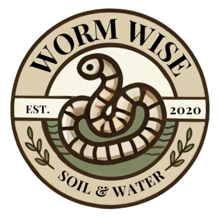

What happens when a master mechanic teams up with a soil specialist? They revolutionize the way we nourish the earth, of course!
At WormWise, we’ve combined engineering ingenuity with a deep understanding of soil biology to create an innovative solution for gardeners, farmers, and agriculturalists. Our worm bin system is designed to produce high-quality worm tea in the most efficient and sustainable way possible.
Using advanced automation and thoughtfully engineered conditions, our bins maintain optimal moisture levels, ensuring peak composting performance. The result? A powerful, all-natural liquid fertilizer that enhances soil structure, boosts nutrient absorption, and increases moisture retention—helping plants thrive in any environment.
Whether you’re cultivating a backyard garden or managing acres of farmland, WormWise is here to help you grow greener, healthier plants while supporting regenerative farming practices.
Ready to supercharge your soil? Let WormWise transform your waste into life.